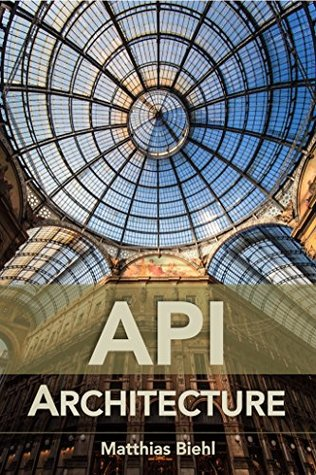

When I put my hands on the API Design and API Architecture books from Matthias Biehl, I instantly knew these were the books I had dreamt of. As a business analyst on a project delivering online banking sitting on top of RESTful JSON-based APIs, I wanted to get more involved. I wished to be able to meaningfully participate at discussions with developers and API architects, and eventually even more contribute to the success of the team. When looking for resources to get my hands dirty, I of course found lots of information online.
Yet, the information was too scattered and I got an idea that having a more structured resource such as a book would be of greater benefit. Needless to say, all the books I browsed through and even started reading either expected previous knowledge I did not have, or did not in any way resemble what I could see around myself at the workplace. In the end, I found the API University by Matthias Biehl, and fortunately enough Matthias turned out to have authored the books which were exactly right up my street.
API Architecture
My first intention was to get the big picture of the API universe, so I started with the title API Architecture, as it promised to delivery exactly that. Getting the books was easy, especially with the Amazon’s 1-click purchase I could start reading in a minute. Already the very few paragraphs of the hundred-and-ninety-page long book provided me with a solid understanding of what APIs are, why they are used, how they get used and how our already highly digitized world is day by day becoming more and more interconnected thanks to APIs. I discovered that APIs allow us for example to create a new, standardized layer above existing legacy and internal systems within companies, so that these companies can open themselves to the outer world and adopt a completely new level of interactions. This sounded fascinating to me.
After having read the first few chapters and learning more about various API stakeholders (providers, consumers, end users) I started to understand conversations going on at the workplace, which I was unable to grasp before. Digging further into the API Architecture I learned about key qualities of APIs (consistency, reusability, customization, discoverability, longevity and also about other architectural styles besides REST, such as HATEOAS, RPC, and SOAP.
At this point I found out that if the API experts at work mentioned their experience with SOAP from a previous project, they were not referring to a detergent. Equipped with all this new knowledge, differences between various architectural styles, description languages and also repositories for API documentation, suddenly I felt like I was not blindfold any longer. The cherry on the cake came with the last chapter on the API methodology which let me taste how to design an actual API in a way that it will be loved by its consumers.
API Design

Having been motivated by the benefits I got from the API Architecture, I could not wait to dive into the API Design. It turned out fast that I had already known a lot from the previous title, because API Design starts with the same introduction that is present in the API Architecture. The chapters following the introduction also partially deal with what is covered in the other book, yet they go into greater details to explain the inside-out, outside-in design approaches, make the reader familiar with consumer-oriented API design, contract-first design, agile design, simulation of the backends, simulation of the APIs and more.
Even despite some repetition the chapters are useful, informative and still easy to understand. The repetition is understandable though, if the book should be able to stand on its own without requiring the readers to be familiar with the API Architecture title. After this, partially repeating part, the book guides its readers all the way from the domain analysis to having a ready-to-implement API design. The implementation itself is not within the scope of the book, still the author gives a clear overview of when and how the implementation happens and how APIs get published, tested and maintained.
It is surprising how the author at not even three hunder pages managed to cover also API description languages, design decisions, architectural patterns and much more. Still, the highest value for the readers who finds themselves at a project with JSON-based REST API lies in the fact that Matthias Biehl provides a step-by-by step guidance to designing such a RESTful JSON-based API by covering vast area of the topic spanning across HTTP and its methods, status codes, URI structures, JSON syntax and structure, content negotiation, parameter types, metadata, error handling, validations, etc. The author also manages to cover non-functional properties, such as security, performance and availability, caching, traffic shaping, evolution and versioning. One will simply become an universal API warrior ready for anything after reading all this and ideally relating it to the real world.
Looking back at the times before I read API Design and API Architecture, and comparing the times to the present moment, I feel extremely grateful for having discovered the two titles. They allowed me to understand the alpha and omega of APIs. I moved from having no structured knowledge into a stage where I consider myself having a very solid understanding of the field.
As a business analyst I have advanced my capabilities because I have become an equivalent partner in discussions with developers, API experts, architects and other more technically experienced analysts. In additional to this I can now even draft API solutions, which has made my work more interesting and rewarding through higher involvement. Eventually also my view of the project significantly changed: I now see it more as an API project, rather than frontend delivery.
A Final Word
Putting the two books side by side and considering the existing overlap between them, I think I would have gained the same understanding just from the API Design. Yet, if you do not intend to design APIs yourself or you do not need detailed understanding, the API Architecture should be your first choice. Still, as with all books, theory needs to be applied to bring an impact, so you find yourself in the best situation, if you work in the environment where the REST+JSON APIs are used, so that you can relate the information in the books to your daily life.